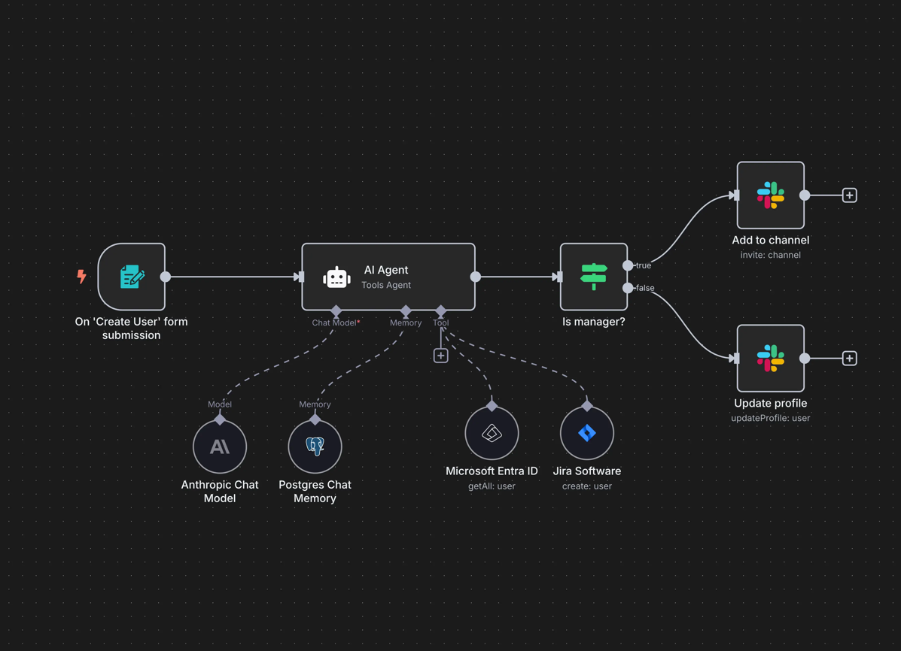
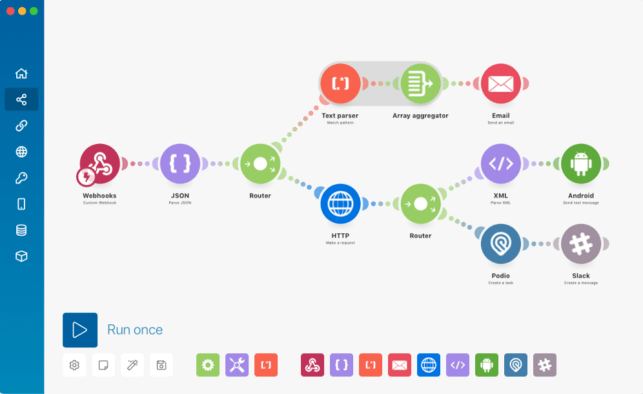
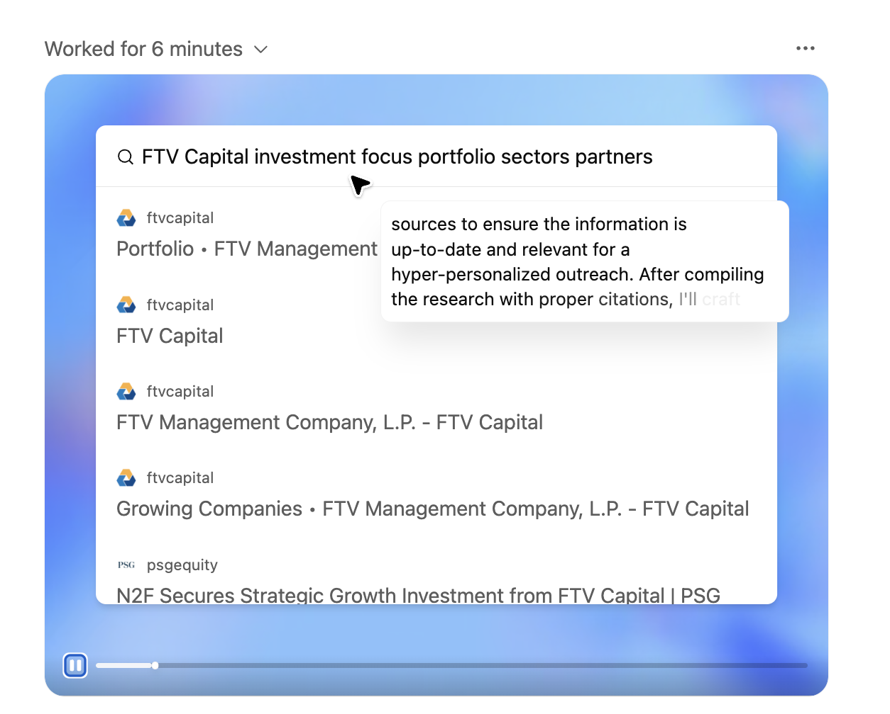
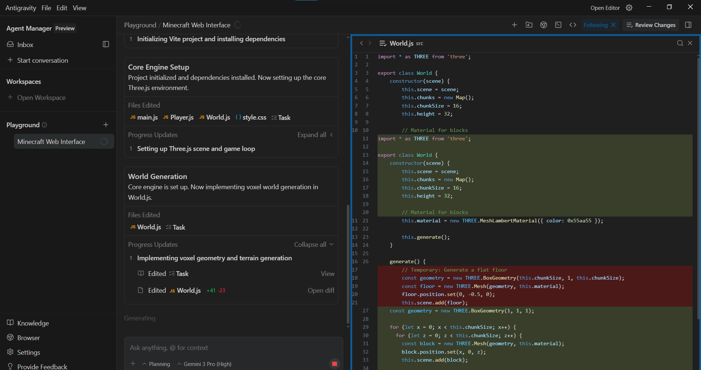
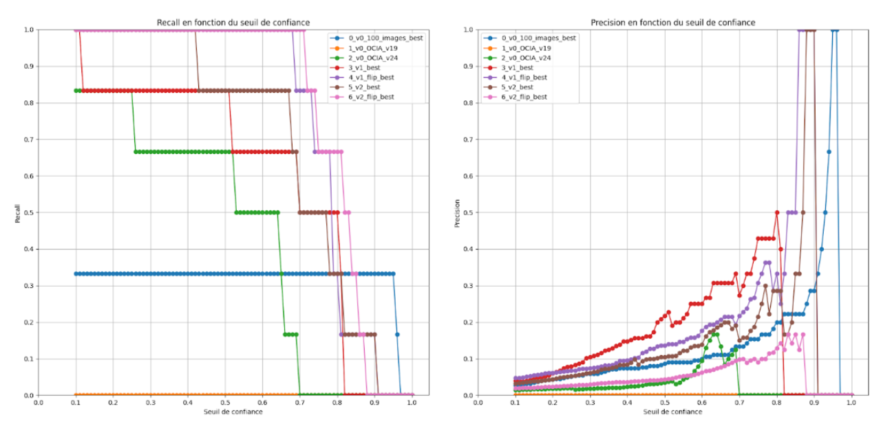

Jusqu'à 90 %
de processus automatisé
sur certaines tâches auparavant réalisées manuellement.
Ingénieur généraliste • Icam • Intelligence artificielle & automatisation
Bienvenue sur mon portfolio orienté intégration IA, automatisation et computer vision. Il présente mon expérience professionnelle ainsi que mes réalisations techniques et projets d'ingénierie.
Agents • Automatisation • Computer Vision
Expérience concrète en développement de solutions IA et d'automatisation, complétée par des projets personnels en agents IA, Python et computer vision.
Aperçu rapide
Stage ingénieur • IA & automatisation
Développement de solutions d'automatisation, d'intelligence artificielle et d'aide au pilotage à partir de besoins opérationnels réels. Les réalisations sont volontairement présentées de manière synthétique afin de préserver la confidentialité des projets.
Jusqu'à 90 %
de processus automatisé
sur certaines tâches auparavant réalisées manuellement.
Plusieurs jours
économisés chaque mois
grâce à l'automatisation de traitements et d'analyses récurrents.
Multi-projets
IA, data & automatisation
de l'analyse du besoin jusqu'aux tests, arbitrages et itérations.
Conception de systèmes IA et d'outils internes pour réduire les tâches répétitives et assister certaines activités nécessitant analyse ou expertise métier.
LLM • Python • API • Automatisation • Prompt engineering
Création d'outils consolidant et structurant différentes données afin de réduire les manipulations manuelles et faciliter leur analyse.
Excel • VBA • Power Query • Dashboards
Analyse des besoins, priorisation de plusieurs sujets simultanés, expérimentation, tests utilisateurs et arbitrage entre impact, simplicité et maintenabilité.
Besoin • Priorisation • Itérations • Documentation
Restructuration d'un espace documentaire partagé en recherchant un compromis entre simplicité d'utilisation, gestion des accès, adoption par les équipes et pérennité.
Structuration • Accès • Adoption utilisateur • Pérennisation
3 niveaux • 10 agents
Développement progressif : assistants GPT simples, agents orchestrés dans n8n, puis cinq niveaux d'agents IA créés en Python. Connexions à des APIs, fichiers et fonctions de computer vision.
Niveau 1 • Facile
Assistants configurés dans ChatGPT (prompts + outils) pour analyser des textes et générer des réponses structurées.
Technos : GPT, consignes système, OpenAPI, Node.js/Express, création d'API, parsing RSS
Niveau 2 • Intermédiaire
Trois agents n8n qui mixent appels OpenAI, webhooks et logique conditionnelle pour traiter images, contenus ou actions selon les sorties IA.
Technos : n8n, HTTP modules, OpenAI, routage conditionnel, APIs, base de données vectorielles.
Niveau 3 • Avancé
Une série d'agents codés en Python avec boucle de raisonnement, appels d'API, manipulation de fichiers et fonctions CV. Pensés pour être étendus, avec pour objectif final la création d'un serveur MCP utilisable par un agent IA.
Technos : Python, OpenAI API, orchestration custom, hooks fichiers/APIs, serveur MCP.
Afin d'apprendre en autodidacte l'IA agentique, j'ai cherché à manipuler différents niveaux d'agents IA dans des environnements différents (No-code → Low-code → Code). J'ai ainsi pris en main plusieurs outils : Make, n8n, Agent Kit OpenAI, ChatGPT Codex, ChatGPT Mode Agent et Google Antigravity.





Dans le cadre de mon mémoire scientifique de fin d'études, encadré par un enseignant-chercheur, j'ai conçu un workflow de bout en bout pour un club de volley : collecte et traitement des données vidéo, analyse de positionnement des joueuses via computer vision, puis restitution d'insights pour faciliter les décisions tactiques et améliorer les performances des athlètes.
Pour ce faire, j'ai développé un ensemble de fonctionnalités grâce à de la programmation Python et Roboflow, outil de création de modèles de vision par ordinateur à partir d'une banque d'images annotées.
Ce travail de recherche a nécessité des comparaisons entre modèles basées sur des modifications du dataset. Ces comparaisons ont mis en évidence le rôle clé de la nature des données dans la précision et la robustesse des détections et m'ont permis de développer une meilleure maîtrise du raisonnement expérimental en intelligence artificielle.
Livrable : outil d'automatisation combinant perception (CV) et reporting (données exploitables).

J'ai enveloppé l'ensemble de la solution mentionnée précédemment dans un prototype de SaaS, en intégrant une interface utilisateur afin de permettre à un utilisateur non technique de prendre en main la solution.
Objectif : valider l'intégration d'une solution technologique adaptée aux spécificités du client : facilité d'utilisation, intégration aux locaux et transfert de compétences.
Pack de scripts pour accélérer la préparation de données et les tâches répétitives. Ces outils font partie des solutions que j'ai créées au fil de mes projets afin de réduire les manipulations à faible valeur ajoutée et de me concentrer sur le cœur des problématiques.
Script pour parcourir des images, copier les couples image/.txt vers un dossier de destination et suivre l'état copié / non copié. Outil créé pour filtrer rapidement un dataset annoté afin de conserver uniquement les images exploitables.
Fichier : auto_alim_dataset.py
Outil pour extraire des frames, les labelliser (service, réception, passe, attaque, bloc) et générer un CSV + captures horodatées grâce aux touches clavier. Navigation rapide et contrôle de vitesse pour accélérer la création d'un dataset.
Fichier : Annotateur_frame.py
Wrapper Python au-dessus d'ffmpeg pour découper une vidéo longue en extraits précis. Une solution utile lorsque les fichiers sont trop lourds pour être manipulés facilement avec des outils en ligne.
Fichier : extrait_longue_video.py
Suppression automatique des fichiers .txt orphelins lorsqu'aucune image associée n'existe, afin d'assainir le dataset avant entraînement.
Fichier : suppression_auto.py
Pour garder la maîtrise des données, j'ai reconstruit en local avec Python des transformations clés façon Roboflow : flips horizontaux par lot et crops automatiques des régions d'intérêt. Cela permet d'augmenter et préparer un dataset sans dépendre systématiquement des crédits d'un outil cloud.
Automatisation des flips horizontaux avec gestion des annotations, pour augmenter le dataset sans dépendre d'outils cloud.
Fichier : Flip.py
Découpage local d'images ou zones d'intérêt, intégré à mes scripts CV pour reproduire une chaîne de préprocessing similaire.
Fichier : Crop.py
Ingénieur généraliste diplômé de l'Icam, avec une expérience professionnelle en intégration IA, automatisation et outils de pilotage. Je développe également des projets personnels autour des agents IA, de Python et de la vision par ordinateur.
Mon approche consiste à partir du besoin réel puis à choisir le niveau de technologie pertinent — automatisation classique, traitement de données ou IA — en recherchant le meilleur compromis entre impact, simplicité d'utilisation et maintenabilité.